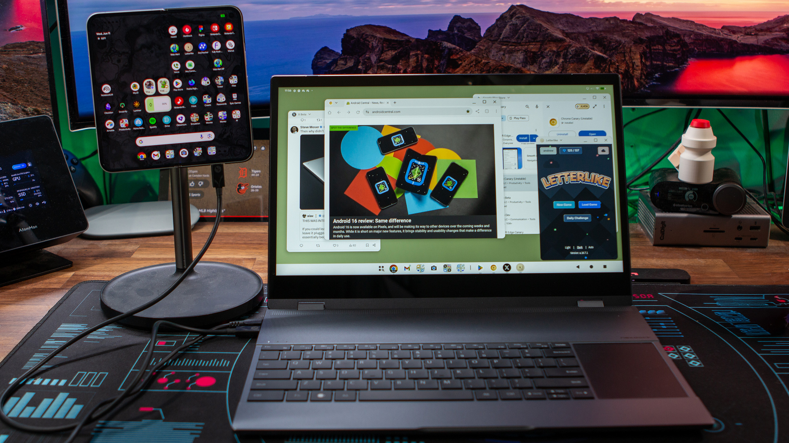

Maior grupo de T.I. de São Paulo e região
Oferecemos serviços de desenvolvimento de alta qualidade em várias áreas de tecnologia.

Nossas Soluções
C
C é uma linguagem de programação compilada de propósito geral, estruturada, imperativa, procedural, padronizada pela Organização Internacional para Padronização (ISO), criada em 1972 por Dennis Ritchie na empresa AT&T Bell Labs para desenvolvimento do sistema operacional Unix (originalmente escrito em Assembly).
C++
C++ é uma linguagem de programação compilada, de propósito geral e alto desempenho, criada por Bjarne Stroustrup como uma extensão do C. Suporta paradigmas imperativos, orientados a objetos e genéricos. É amplamente utilizada em sistemas operacionais, jogos, motores gráficos e aplicações de alto desempenho.
C#
C# é uma linguagem de programação moderna, orientada a objetos e de tipagem forte, desenvolvida pela Microsoft como parte da plataforma .NET. Amplamente usada para criar aplicativos Web, Desktop, Mobile e Jogos (Unity), ela é popular por sua versatilidade, sintaxe clara e alto desempenho, sendo uma das top 5 linguagens no GitHub.
Erlang
Erlang é uma linguagem de programação funcional e ambiente de tempo de execução (runtime) de propósito geral, focado em alta disponibilidade, tolerância a falhas e sistemas distribuídos massivamente escaláveis. Desenvolvida pela Ericsson em 1986 para telefonia, é ideal para sistemas em tempo real, como bancos...
R
R é uma linguagem de programação multi-paradigma orientada a objetos, programação funcional, dinâmica, fracamente tipada, voltada à manipulação, análise e visualização de dados. Foi criado originalmente por Ross Ihaka e por Robert Gentleman no departamento de Estatística da Universidade de Auckland, Nova Zelândia.
Assembly
Assembly ou linguagem de montagem é uma notação legível por humanos para o código de máquina que uma arquitetura de computador específica usa, utilizada para programar códigos entendidos por dispositivos computacionais, como microprocessadores e microcontroladores. O código de máquina torna-se legível...
Java
Java é uma linguagem de programação orientada a objetos desenvolvida na década de 90 por uma equipe de programadores chefiada por James Gosling, na empresa Sun Microsystems, que em 2008 foi adquirido pela empresa Oracle Corporation.[4] Diferente das linguagens de programação modernas, que são compiladas para código nativo...
Lua
Lua é uma linguagem de programação interpretada, de script em alto nível, com tipagem dinâmica e multiparadigma, reflexiva e leve, projetada pela Tecgraf da PUC-Rio em 1993 para expandir aplicações em geral, de forma extensível (que une partes de um programa feitas em mais de uma linguagem), para prototipagem...
Flutter
Flutter é um kit de desenvolvimento de software de interface de usuário (toolkit e framework), de código aberto, criado pela empresa Google em 2015, baseado na linguagem de programação Dart, que possibilita a criação de aplicativos para Web (através de WebAssembly) e para os sistemas operacionais Android, iOS...
Kotlin
Kotlin é uma linguagem de programação multiplataforma, orientada a objetos e funcional, concisa e estaticamente tipada (variáveis com tipos específicos), desenvolvida em 2011 pela empresa tcheca JetBrains,[4] que compila para a Máquina virtual Java (JVM) e também traduzida para a linguagem JavaScript
Ruby
Ruby é uma linguagem de programação interpretada multiparadigma, de tipagem dinâmica e forte, com gerenciamento de memória automático, originalmente planejada e desenvolvida no Japão em 1995, por Yukihiro "Matz" Matsumoto
Ruby on Rails
Ruby on Rails é um framework livre que promete aumentar velocidade e facilidade no desenvolvimento de sites orientados a banco de dados (database-driven web sites), uma vez que é possível criar aplicações com base em estruturas pré-definidas. Frequentemente referenciado como Rails ou RoR.